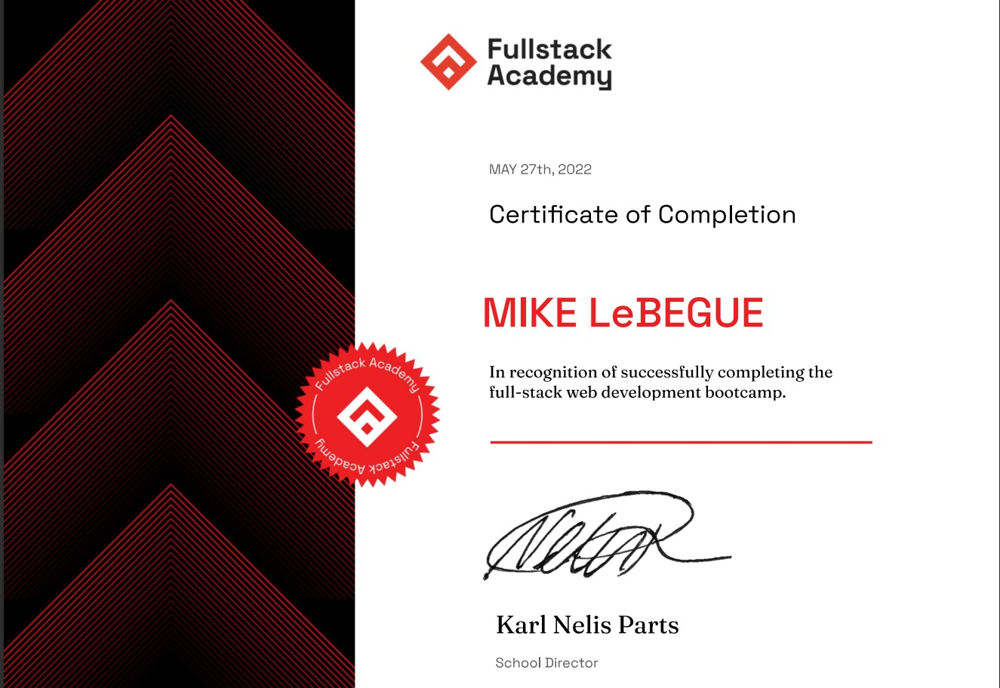
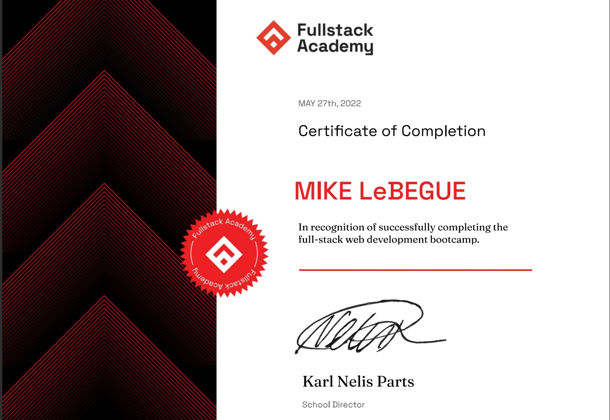

Welcome to my Wheelhouse!
I am a Software Engineer that brings ideas to digital fruition. I create applications from start to finish, and front to back. Working and communicating well with others, as well as independently, leads me to asking the right questions to develop user stories and turn them into sprints within an agile software development lifecycle. I enjoy learning new tech and refining my skills with tech I already know by using AlgoExpert and Codewars.
About Me
Veteran, Programmer, and life-long learner.
I was a 68W
(Health Care Specialist) in the United States Army. I joined the
military one year after graduating high school. I wasn't sure what
it was that I wanted to do, so I invested in myself and took the
patriotic leap to serve my country. During my time of service, I met
many exceptional Soldiers. I was fortunate enough to have crossed
paths with great mentors and it was through them that I was
introduced to programming. I am extremely proud of my military
service and how it has shaped me as a person, professional, and
everything between.
After my 5 years of service, I went
to school. Through my years of school, I found software development
to be what I wanted to do. I enrolled in Full Stack Academy to
reinforce what I had learned and pave the way for improvements. I
was able to transfer my soft skills from the military to the
software engineering field, and I have found them to be a perfect
match. Communicating well, working in a team, and discipline have
been the forefront of my soft skills that I continue to use on a
daily basis. These skills propel my abilities to build a full stack
application on my own and within a team.
Experience
My most recent and pertinent experience to software engineering rests within my projects.
Currently, I am a Customer Support Engineer. I spend my day
interfacing with customers over the phone and email. I document
support requests and tracks issues from the point of induction
through resolution. I identify patterns in which a new product,
feature, and new or additional hardware may improve the system. I
analyze the current system's performance and make recommendations
where necessary.
Prior to college, I spent 5 years in the United States Army as a
Medic. I spent 2 years attached to an infantry platoon, suppporting
their missions and training. The last 3 years were spent as an
Administrative Clerk where I composed reports utilizing Microsoft
Office for the Command Team.
Skills
My front-end skills reside within HTML5, CSS3, React.js, Redux.js, React-Native.js, Bootstrap, and Javascript. On the back-end, I work with Node.js, Express, Sequelize, and MySQL, PostgreSql. Git and Github are my choices for version control. I have used AWS but prefer Azure as I have more experience with it. I have utilized all of this tech in an agile environment.
Education
Bachelor of Science in Computer Science
Lewis University, 2019-2021
Western Illinois University, 2017-2018
Certificates:
FullStack Academy
Projects
Projects:
HiitCoin
Front-End Mobile-Development | 05/22
This is a mobile fitness tracker. I spent my time utilizing React
Native and Native Base to build the front-end components. Check out
the README in the repository to demo. It can be demoed on any
platform.
HiitCoin's Repository
Contact Me
Cell: 309-333-9926
Email: lebegue92@yahoo.com
Resume

 
